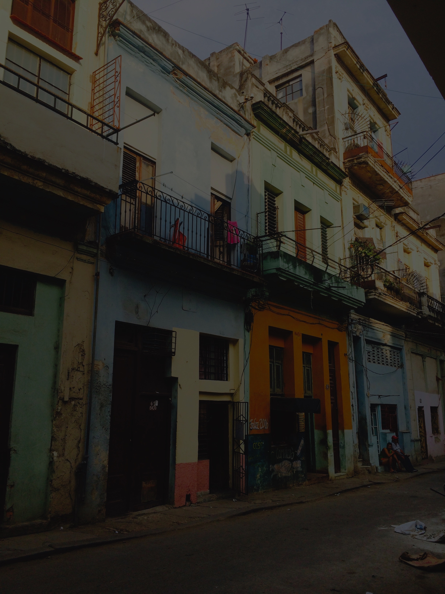
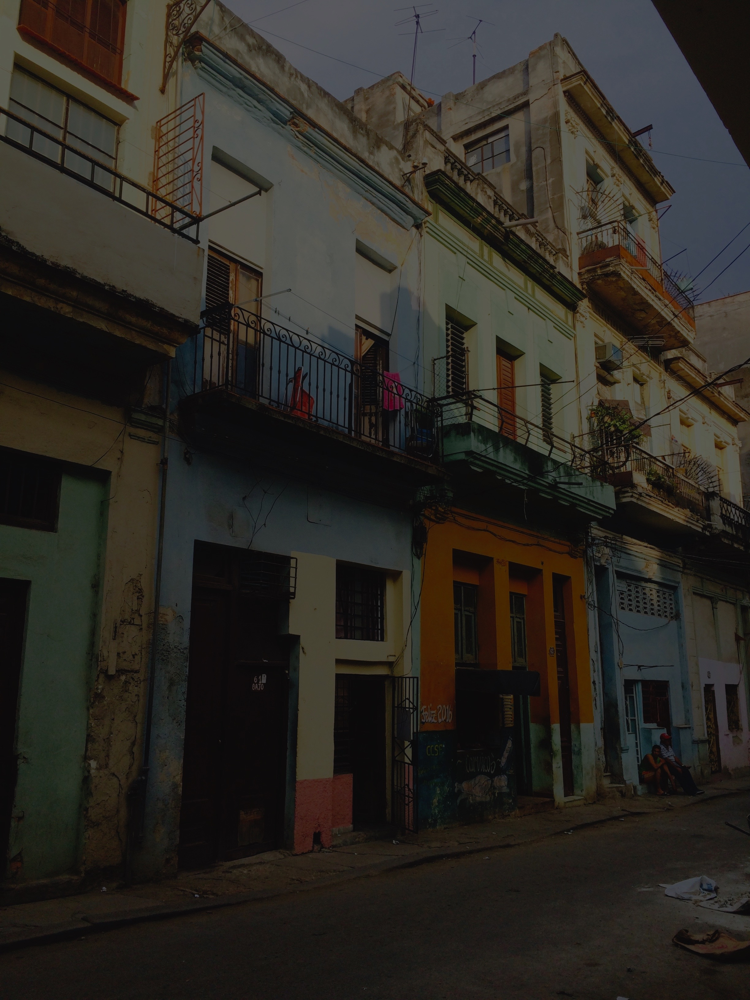

Bridging the fields of anthropology, computer-supported cooperative work
(CSCW), and ICTD (Information Communication Technologies & Development),
I use qualitative methods to study how underrepresented groups collaboratively
access and participate with information communication technologies
(ICTs) in politically and resource-constrained societies. Drawing on my
training as a sociocultural anthropologist, my work investigates (1)
internet access in resource-constrained regions; (2) the design of
citizen-led information systems; and (3) social media use for social change.
I received my Ph.D. in the School of Interactive Computing at Georgia Tech.
My dissertation analyzed how individuals in Havana, Cuba, collaboratively
piece together multiple information infrastructures to create a uniquely “Cuban”
internet against the backdrop of prohibitive access to the world wide web.
At Georgia Tech, I was advised by
Amy Bruckman
and Neha Kumar and was a
member of the ELC Lab
and the TanDem Lab.
I am also a Microsoft Research Ph.D. Fellow.
I have a Master’s degree in anthropology from Georgia State University,
specializing in cultural and digital anthropology. My
research examined
the use of Facebook for impression management and political activism by
diasporic Hispanic groups. I received my Bachelor’s degree in Spanish
from the University of Georgia, where my studies centered on Spanish
media and culture.
In between getting my degrees, I worked as a social media and public
relations manager at organizations including Georgia Tech, Georgia
Aquarium, Northside Hospital, and Cohen Wolfe. I’ve also worked as a
private social media consultant for individuals, non-profits, and small
businesses.
I enjoy collaborating with researchers across a variety of disciplines
to examine engagements with digital technologies among traditionally
underrepresented groups. I am particularly interested in qualitative
research methods, social computing, HCI4D, information communication
technologies and development (ICTD), internet access interventions,
hyper-local information infrastructures, e-democracy, activism through
social media, and the virtual public sphere.
I also enjoy exploring remote places, throwing impromptu dance parties,
reading historical fiction, and playing with all kinds of animals.
Here is my CV

 
